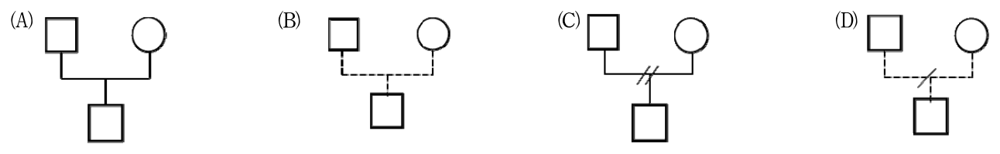

108 年護理師精神科與社區衛生護理學試題與答案
這一頁是民國 108 年護理師精神科與社區衛生護理學的整份歷屆試題，共 80 題，題目與標準答案出自考選部「國家考試試題及測驗式試題答案」開放資料，其中 68 題附有詳解。以下逐題列出題幹、選項與答案；要計時作答或記錄成績，請用線上練習。
考選部原始場次代碼：108110
線上作答這一科 →
全部 80 題
第 1 題
在治療性人際關係建立中，下列敘述何者最適當？
- （A）避免探究護理師自己的感覺，主要焦點仍在處理病人的感覺
- （B）為求客觀性，護理師應壓抑自己的情緒，以避免造成情感反轉移
- （C）護理師應分析自己的特性及感受如何影響關係的建立
- （D）可常利用情感反轉移關係來改變病人行為
答案：（C）
詳解與考點
正解：題眼在「治療性人際關係建立」——判準是護理師的自我覺察，而不是否認自己的情緒。護理師須辨認自身特性、感受與可能的反轉移，才可避免把個人需求帶入關係；（C）能分析自己如何影響關係建立，故選 C。
A：治療關係以病人為中心，但護理師仍須探究自身感覺及其影響；完全避免自我覺察會增加反轉移未被處理的風險，故非答案。
B：客觀不等於壓抑情緒，而是辨識、督導及適當管理情緒，故非答案。
D：反轉移應被察覺並處理，不可經常利用來改變病人行為；這是最強誘答——「運用關係」方向看似治療性，錯在反轉移來自護理師未處理的情緒，而非可操作的治療工具。
本題考點：治療性人際關係（therapeutic relationship）以病人為中心；自我覺察（self-awareness）；反轉移（countertransference）的辨識與處理。
第 2 題待校
對於心理衛生初段預防工作的敘述，下列何者正確？①高危險群衛生教育 ②強化個人因應能力 ③協助精神病人早日返回社區 ④倡導正當休閒娛樂活動 ①②③
- （A）②③④
- （B）①②④
- （C）①③④
- （D）
答案：（C）
第 3 題
一位曾經因精神疾患住院治療的 25 歲張小姐，返回原工作單位，被該私人公司主管以精神疾患為由 解聘，下列敘述何者正確？
- （A）此為人之常情，私人公司通常為了營運與效率，可以解聘張小姐，但公家機關則不可以任意解聘
- （B）此不符合精神衛生法，除非該公司能證明張小姐無法勝任所要求的工作任務，不能因有精神疾患 之就醫紀錄而解聘
- （C）即使張小姐仍然可以勝任該工作所賦予的任務，但因精神疾患為不定時炸彈，公司可以其他理由 解聘
- （D）此案例沒有標準答案，私人公司可自訂其合約內容，可將罹患精神病列入解聘條件，若當初合約 上有條列即可解聘，不違反精神衛生法
答案：（B）
詳解與考點
正解：題眼在「因精神疾患就醫紀錄遭解聘」但仍須看是否能勝任工作——判準是不得以精神疾患或就醫紀錄作為差別待遇的唯一理由。（B）指出雇主須能證明無法勝任工作要求，不能僅因就醫紀錄解聘，符合精神健康權益與就業平等原則，故選 B。個案的具體法律適用仍須依當時規範、職務要求與事實認定，本題未提供足以判定的細節。
A：私人公司同樣不能將精神疾患本身當成任意解聘的理由，故非答案。
C：以「不定時炸彈」標籤化病人，且主張以其他理由規避保障，違反非歧視原則，故非答案。
D：勞動契約不能以約定排除法律所保障的基本權益；這是最強誘答——契約自治看似適用於私人公司，錯在契約內容不得合法化歧視性解聘。
本題考點：精神疾患病人的就業權（right to employment）；非歧視原則（non-discrimination）；工作勝任能力評估（fitness for work assessment）。
第 4 題
一位剛入院的精神病人林先生，情緒焦躁，因想打電話通知家人辦理出院，跑到護理站前要求出院， 對工作人員大聲謾罵，並企圖攻擊護理師，面對該情緒失控的病人，下列何項措施較適切？
- （A）「你的行為已經干擾到大家，若你不能控制自己的行為，我們只好把你綁起來」
- （B）「你看起來很生氣，我們可以談一談嗎？若你仍然無法控制自己的情緒，我們暫時需用約束的方 式協助你」
- （C）不用告訴林先生要約束他，以免使他更生氣激躁，聯絡其他可以協助的工作人員，直接將林先生 約束
- （D）「你已經嚴重違反病房住院規定，你再這樣無法自我控制，會更延長住院的天數」
答案：（B）
詳解與考點
正解：題眼在「企圖攻擊護理師」與「情緒失控」——判準先取安全，再以尊重與最少限制方式處理。（B）先反映病人的憤怒、邀請談話，並清楚說明若無法控制而有安全風險時才暫時約束，兼顧治療性溝通與安全，故選 B。
A：直接以「把你綁起來」威脅，容易升高對立，且未先以支持性溝通和較少限制措施處理，故非答案。
C：約束前應在可行情況下向病人說明原因與目的；未告知即直接約束忽略尊重與溝通，故非答案。
D：以延長住院天數作為警告屬懲罰式語言，無助於降溫或處理當下危險，故非答案。
本題考點：危機處置（crisis intervention）的安全優先；治療性溝通（therapeutic communication）的情緒反映與設限；最少限制原則（least restrictive intervention）。
第 5 題
護理師跟王小姐討論導致她憂鬱的主要生活壓力源，及遇到壓力時，王小姐常會立即出現責備自己 的壓力反應。上述通常是出現於治療性人際關係的那個期別？
- （A）互動前期
- （B）介紹期
- （C）工作期
- （D）結束期
答案：（C）
詳解與考點
正解：題眼在「討論主要生活壓力源」及「責備自己」的壓力反應——判準是治療關係已進入探索問題與促進因應的階段。工作期用來探討壓力來源、感受、慣有反應及替代因應方式；（C）最符合題幹的互動內容，故選 C。
A：互動前期是護理師自我準備、蒐集資料與檢視個人感受的階段，尚未與病人共同深入討論，故非答案。
B：介紹期主要建立信任、界定關係與蒐集初步資料，故非答案。
D：結束期著重回顧進展、處理分離感與安排後續資源，不是首次深入分析壓力反應的重點，故非答案。
本題考點：治療性關係的工作期（working phase）；壓力源探索（stressors exploration）；因應反應（coping response）的覺察與修正。
第 6 題
有關鬱症的敘述，下列何者最適切？
- （A）男性鬱症盛行率高於女性
- （B）病人血清素濃度比平常人要低
- （C）病人最常使用轉移的防衛機轉
- （D）主因與多巴胺（dopamine）濃度高有關
答案：（B）
詳解與考點
正解：題眼在「鬱症」的生物學解釋——判準是單胺類神經傳導物質失調的傳統教科書概念。血清素參與情緒、睡眠及食慾調節，鬱症常與血清素功能降低相關；（B）最符合此概念，故選 B。
A：鬱症在女性的盛行率通常較高，不是男性較高，故非答案。
C：轉移是將情感由原對象轉向較安全對象，並非鬱症最具代表性的防衛機轉，故非答案。
D：多巴胺濃度升高較常用於解釋精神病性症狀的部分假說，不能作為鬱症的主要原因，故非答案。
本題考點：鬱症（depressive disorder）的單胺假說（monoamine hypothesis）；血清素（serotonin）與情緒調節；防衛機轉（defense mechanisms）的概念辨析。
第 7 題
精神病人因為堅定相信自己身體裡已經沒有消化器官，所以不願意進食，這是屬於何種妄想？
- （A）誇大（grandeur）
- （B）虛無（nihilistic）
- （C）身體（somatic）
- （D）關係（reference）
答案：（B）
詳解與考點
正解：題眼在「身體裡已經沒有消化器官」及拒絕進食——判準是病人堅信自身或世界不存在、毀滅或空無的內容。虛無妄想的核心是存在被否定，例如器官不存在或自己已死亡；（B）符合此定義，故選 B。
A：誇大妄想是過度誇大自身能力、身分或財富，與器官不存在相反，故非答案。
C：身體妄想泛指對身體異常的錯誤信念；本題更精確的內容是「不存在」，應歸為虛無妄想，故非答案。
D：關係妄想是將外界中性事件解讀為與自己有特殊關聯，故非答案。
本題考點：虛無妄想（nihilistic delusion）；身體妄想（somatic delusion）；妄想內容（delusional content）的分類。
第 8 題
有關精神疾病的臨床表徵，下列敘述何者正確？
- （A）病人規則地重複某些固定型態的無意義動作或言語，稱之為作態動作
- （B）不語症的動作行為障礙，最常見於重鬱症的病人
- （C）難以自我控制地重複某些動作或行為，稱之為強迫行為
- （D）重複他人的話，甚至模仿別人說話，稱之為阻抗行為
答案：（C）
詳解與考點
正解：題眼在「難以自我控制地重複某些動作或行為」——判準是強迫行為的定義。強迫行為是病人為降低焦慮而反覆執行、且主觀上難以控制的行為；（C）描述正確，故選 C。
A：規則重複無意義動作或言語較接近刻板動作，不是作態動作；作態動作常呈怪異、誇張且有姿勢性的表現，故非答案。
B：不語症可見於多種精神或神經精神狀態，不能說最常見於重鬱症，故非答案。
D：重複他人話語稱為模仿語，不是阻抗行為，故非答案。
本題考點：強迫行為（compulsion）；刻板動作（stereotypy）與作態動作（mannerism）；模仿語（echolalia）。
第 9 題
馬先生，患思覺失調症約 2 年，近日與人爭吵，擔心會被殺害而不敢睡覺，整天疑神疑鬼，且對此 想法堅信不移，無法接受別人的建議，有關馬先生防衛機轉之敘述，下列何者正確？
- （A）內射作用（introjection）
- （B）外射作用（projection）
- （C）否定作用（denial）
- （D）幻想作用（fantasy）
答案：（B）
詳解與考點
正解：題眼在「擔心會被殺害」且對想法堅信不移——判準是將內在不可接受的感受或衝突歸因於外界。依官方答案，（B）外射作用是把自己的衝動、想法或感受投向他人，本題以被害想法呈現，故選 B。
A：內射作用是把他人的價值、態度或特質內化為自己的一部分，與將威脅歸於外界不同，故非答案。
C：否定作用是否認痛苦事實或感受存在，與病人積極相信外界要害他不同，故非答案。
D：幻想作用是以想像滿足願望或逃避現實，題幹的核心是堅定被害信念，故非答案。
本題考點：外射作用（projection）；被害妄想（persecutory delusion）；防衛機轉（defense mechanisms）與精神病性症狀的概念區分。
第 10 題
王先生，國立大學法律系畢業，住院第三天，診斷為雙相情緒障礙症，正處於躁期，擔心自己吃藥 後可能產生副作用，要求借閱藥品手冊以了解自己所服藥物的合理劑量，護理師查閱病歷，確認病 人的藥物劑量在合理的成人劑量範圍，護理師的回應下列何者最適合？
- （A）借給病人藥品手冊，但是撕掉病人所服藥物所在頁數
- （B）評估王先生對服藥的反應及想法，並說明藥物的主要作用
- （C）告訴王先生應該相信醫師，這是合宜的的劑量
- （D）告訴王先生藥品手冊只能工作人員使用
答案：（B）
詳解與考點
正解：題眼在躁期病人擔心副作用並主動詢問劑量——判準是先評估病人對給藥的理解與反應，再提供可理解的資訊。（B）評估其想法並說明藥物主要作用，能建立合作、確認疑慮及促進安全服藥，故選 B。
A：刻意撕掉相關頁面是隱瞞資訊，會破壞信任，也無法處理副作用疑慮，故非答案。
C：只要求病人相信醫師是權威式回應，跳過評估與衛教，故非答案。
D：以手冊僅供工作人員使用為由拒絕，阻斷病人參與治療的機會，故非答案。
本題考點：給藥護理（medication nursing）的評估與衛教；共同決策（shared decision-making）；治療性溝通（therapeutic communication）的開放探索。
第 11 題
參與團體治療後，病人分享：「團體中別人給我的回饋幫助我了解到，如何表達自我感受，才不會 造成不好的後果」，這表示團體治療對此病人最能達到下列何種治療因子？
- （A）利他性（altruism）
- （B）希望灌注（instillation of hope）
- （C）人際學習（interpersonal learning）
- （D）情感宣洩（catharsis）
答案：（D）
詳解與考點
正解：題眼在「了解如何表達自我感受，才不會造成不好的後果」——Yalom 治療因子中的情感宣洩（catharsis），其條目本就包含「學習如何表達我的感受」與「能把心裡的話說出來而不是壓抑」；題幹描述的正是學會把情緒說出口的方式，落在此因子，故選 D。
A：利他性是透過幫助其他成員感到自己有價值，題幹未描述幫助他人，故非答案。
B：希望灌注是從他人的進步或治療可能性獲得希望，題幹重點不是希望感，故非答案。
C：人際學習的核心是從他人的反映中認識「自己在人際中是什麼樣子」、看見自己的互動模式；本題成員學到的是表達感受這項技巧本身，落點不同，故非答案。這是最強誘答——兩者都出現「別人的回饋」，判準在學到的是自我形象的認識，還是情緒表達的方式。
本題考點：團體治療因子（therapeutic factors）；情感宣洩（catharsis）；人際學習（interpersonal learning）。
第 12 題待校
林小姐，因患嚴重的強迫症而住院治療，楊護理師經多日的觀察與評估後，擬訂林小姐的護理計畫， 並安排每週二次的認知治療，有關認知治療之敘述，下列何項較適切？①認知的再建構 ②安排作 業練習 ③僅強調過去經驗 ④建立替代想法 ①②③
- （A）①②④
- （B）①③④
- （C）②③④
- （D）
答案：（B）
第 13 題
小賀，國小四年級，因逃家被母親帶來兒童心智科求助，醫師建議安排家庭治療，母親卻激動表示 醫師弄錯對象，護理師的回應，下列何者較適切？
- （A）「讓我們一起來幫助小賀。」
- （B）「小孩的病，通常是大人的問題。」
- （C）「來看家庭治療師，可預防精神疾病。」
- （D）「做母親幫助孩子，是責任，也是義務。」
答案：（A）
詳解與考點
正解：題眼在母親認為家庭治療是「弄錯對象」而感到激動——判準是先建立合作聯盟，避免指責家長。 （A）「讓我們一起來幫助小賀」把家庭治療定位為共同支持孩子，能降低防衛並開啟對話，故選 A。
B：將孩子問題直接歸咎於大人會引發罪惡感與防衛，破壞合作關係，故非答案。
C：以預防精神疾病說服，未先回應母親被指責的感受，也未說明家庭治療的共同目標，故非答案。
D：以責任與義務施壓屬道德評價，容易使母親更抗拒；這是最強誘答——協助孩子確是父母關心的事，但治療性回應應先邀請合作，不能用責任感迫使接受。
本題考點：家庭治療（family therapy）的系統觀點；治療聯盟（therapeutic alliance）；非評價式溝通（nonjudgmental communication）。
第 14 題
失智症病人發生譫妄的症狀，應檢查出身體疾病加以治療，使用藥物時，必須避免下列何項藥物使 用，以免使譫妄更嚴重？
- （A）quetiapine（QTP）
- （B）benzodiazepine（BZD）
- （C）aripiprazole（ARI）
- （D）olanzapine（OLZ）
答案：（B）
詳解與考點
正解：題眼在失智症病人合併「譫妄」——判準是避免會加重中樞神經抑制、注意力混亂或認知波動的藥物。benzodiazepine 可能使高齡或認知障礙病人的鎮靜、跌倒與混亂加重；（B）除特定適應症外應避免作為譫妄的常規處置，故選 B。
A：quetiapine 為非典型抗精神病藥，必要時可在審慎評估下用於嚴重躁動或精神病性症狀，並非題目所指最應避免者，故非答案。
C：aripiprazole 亦為非典型抗精神病藥，仍須評估不良反應，但不屬本題所指會典型加重譫妄的藥物類別，故非答案。
D：olanzapine 為非典型抗精神病藥，使用時應監測鎮靜與代謝等風險，但本題的優先避用判準是 benzodiazepine，故非答案。
本題考點：譫妄（delirium）的可逆身體病因評估；benzodiazepine 的中樞神經抑制（central nervous system depression）風險；失智症（dementia）病人的跌倒與認知監測。
第 15 題
護理師執行給藥時，發現病人取藥後未服下並轉身離開。下列何項是此時最適當的護理措施？
- （A）通知醫師將藥物改為針劑
- （B）協助磨粉以確實服藥
- （C）提供精神疾病之衛教
- （D）要確認病人確實服下藥物
答案：（D）
詳解與考點
正解：題眼在病人「取藥後未服下並轉身離開」——判準是給藥安全的最後確認。護理師尚未完成給藥程序，應立即以尊重方式確認病人是否實際吞服，避免藏藥、漏服或誤服；（D）符合給藥五對與用藥安全原則，故選 D。
A：尚未評估未服藥原因及確認服藥情形就要求改針劑，跳過護理評估，故非答案。
B：磨粉前須確認藥物劑型是否可磨、病人是否同意及醫囑適切性，不能只為確實服藥而逕行處理，故非答案。
C：衛教有助於長期遵從性，但當下先要確認藥物去向與安全；這是最強誘答——衛教方向正確，錯在時機晚於立即的給藥安全確認。
本題考點：給藥五對（five rights of medication administration）；直接觀察服藥（directly observed medication administration）；護理過程（nursing process）的評估優先。
第 16 題
林小姐，診斷為思覺失調症，目前於精神復健病房住院，偶有自笑自語，衣服常有異味，病床單位 凌亂，常躺床少與人互動。有關林小姐目前的精神復健目標，下列何項優先？
- （A）積極治療精神症狀
- （B）改善日常生活功能
- （C）增進人際互動技巧
- （D）改善急性精神症狀
答案：（B）
詳解與考點
正解：題眼在「精神復健病房」及個案已出現自笑自語卻以衣物異味、床位凌亂、少互動為主要生活困擾——此時復健目標應先回到可觀察、可練習的日常生活功能。協助個案維持個人衛生、整理生活空間與建立規律作息，是後續社交與社區適應的基礎，故選 B。
A、D：積極或改善急性精神症狀主要是急性期的治療目標，通常以藥物與危機處置為主；題幹已定位於精神復健，優先不在急性症狀控制。
C：人際互動技巧固然是復健內容，但個案目前自我照顧與生活組織能力不足，依功能重建的步驟應先處理（B）改善日常生活功能。這是最強誘答——它同樣符合「少與人互動」，但錯在跳過較基本的生活自理需求。
本題考點：精神復健（psychiatric rehabilitation）以功能恢復與社區適應為核心；日常生活活動（activities of daily living, ADL）是個人衛生、作息與環境整理的基礎；護理優先序（nursing priority）先處理目前可辨識的基本功能缺損，再進入較高層的人際訓練。
第 17 題
林小姐，診斷為鬱症，入院後多躺床，進食量少，入院第一週，體重已由 60 公斤降至 58 公斤，下 列護理措施何者最適宜？
- （A）應採用低鈉飲食，以免造成鈉離子滯留過多
- （B）安排數位病友陪伴個案進餐，以增加食慾
- （C）選擇高熱量的均衡飲食
- （D）使用調味料以促進食慾
答案：（C）
詳解與考點
正解：題眼在「鬱症、躺床、進食量少」及一週由 60 公斤降至 58 公斤——已出現攝取不足與體重下降，依生命安全與生理需求優先，首要是提高可攝取的熱量並兼顧營養均衡，故選 C。
A：低鈉飲食適用於需限制鈉攝取的特定狀況，題幹未提供此適應症，反而會無端限縮食物選擇，不利改善熱量攝取。
B：病友陪伴可能增加用餐支持，但不能直接確保足夠熱量與營養；在已明確體重下降時，應先以（C）高熱量的均衡飲食處理生理需求。
D：適量調味可作為促進食慾的輔助，但它不是針對營養不足的主要措施。這是最強誘答——方向似乎有助食慾，卻只改善口味，未直接建立足量且均衡的攝取。
本題考點：憂鬱症（depressive disorder）急性期可見食慾與活動量下降；營養支持（nutritional support）以足量熱量與均衡營養為優先；Maslow 需求層次（Maslow’s hierarchy of needs）要求先處理體重下降等生理需求。
第 18 題
王先生為躁症病人，情緒高昂、易怒，容易受病友影響而生氣，下列對於王先生活動的安排，何者 較適切？
- （A）安排參加團體競賽活動，協助消耗體力
- （B）幫忙蓋檢驗單上的病房章
- （C）與病友一起主持卡拉 OK 比賽
- （D）協助護理師一起布置活動場地
答案：（D）
詳解與考點
正解：題眼在「躁症、情緒高昂、易怒，容易受病友影響而生氣」——活動安排要降低競爭與過度刺激，同時提供簡短、具體、可完成的能量出口。（D）協助布置場地可在工作人員引導下進行，刺激與人際衝突較少，故選 D。
A：團體競賽具勝負與人際刺激，容易加劇易怒、衝動與衝突，不適合躁症急性期。
B：蓋病房章屬行政例行工作，對躁動個案缺乏明確治療目的，也未能安全引導其過多精力。
C：共同主持卡拉 OK 比賽需要大量社交、聲光與表現刺激，且易引發競爭；這是最強誘答——看似能讓病人消耗精力，但刺激強度反而可能放大情緒高昂與易怒。
本題考點：躁症（mania）急性期活動宜低刺激、結構化且有明確界限；環境刺激管理（stimulus reduction）可降低衝動與衝突；治療性活動（therapeutic activity）應依個案當下情緒與控制能力安排。
第 19 題
有關阿茲海默症的敘述，下列何者正確？
- （A）通常是先對人、時、地，依序產生定向感障礙
- （B）記憶力的喪失依序為立即→近期→遠期
- （C）記憶障礙症狀通常是急性期出現
- （D）白天因為刺激多，所以白天症狀較混亂
答案：（B）
詳解與考點
正解：題眼在「阿茲海默症」——其典型是漸進性認知退化，早期先影響新近形成的記憶，因此記憶喪失依立即、近期、遠期的順序表現，故選 B。
A：定向感障礙通常先影響時間，其後才逐漸影響地點與人物，非題述的人、時、地順序。
C：阿茲海默症是慢性、漸進性的神經認知障礙，非急性起病；急性混亂較應考慮譫妄等情況。
D：症狀常在傍晚或夜間因疲倦、環境光線改變而較明顯，並非白天刺激多就必然更混亂。這是最強誘答——它抓到「刺激可能造成不安」，但混亂加劇的典型時間型態不在白天。
本題考點：阿茲海默症（Alzheimer’s disease）為漸進性神經認知障礙；記憶退化（memory loss）由新近記憶逐步波及遠期記憶；日落症候群（sundowning）指傍晚至夜間較易出現混亂或行為困擾。
第 20 題
照護雙相情緒障礙症病人，因病人情緒高昂與挑釁，護理師出現生氣厭煩情緒，此時護理師該如何 處理自己的情感反轉移？
- （A）情感反轉移是不好的現象，要壓抑
- （B）與病人討論生氣情緒
- （C）檢視自己的感覺與想法
- （D）時間會消退情感反轉移，不必理會
答案：（C）
詳解與考點
正解：題眼在護理師因病人挑釁而感到「生氣厭煩」——這是反轉移訊號，處理的第一步是自我覺察，辨認情緒、來源與它可能如何影響專業判斷，故選 C。
A：反轉移不是道德上的好壞，而是可被辨識與督導處理的專業現象；壓抑會使情緒以不自覺方式影響互動。
B：在未先整理自身感受前直接和病人討論，容易把護理師的情緒負擔轉嫁給病人，破壞治療性關係。
D：時間未必能消除未被覺察的反轉移，忽略它可能造成過度控制、疏離或不適當回應。這是最強誘答——情緒或許暫時淡化，卻沒有處理其對照護判斷的影響。
本題考點：反轉移（countertransference）是照護者對病人產生的情緒反應；自我覺察（self-awareness）是維持專業界限的第一步；治療性關係（therapeutic relationship）要求將照護者的需求與病人的需求區分。
第 21 題
有關鬱症病人之急性期照護的敘述，下列何者最適當？
- （A）鼓勵發掘自己長處
- （B）安排認知行為治療
- （C）建立疾病的病識感
- （D）安全性評估與支持
答案：（D）
詳解與考點
正解：題眼在「鬱症病人」與「急性期」——急性期先依安全優於心理成長的優先序，評估自殺、自傷與基本照護風險，並提供支持性陪伴，故選 D。
A：發掘長處有助自我價值，但屬症狀較穩定後可逐步進行的復原目標，不能取代急性期安全評估。
B：認知行為治療可用於鬱症治療，但題問急性期最適當措施時，須先處理安全性與立即支持。
C：建立病識感是後續衛教與治療合作的重要目標；急性期若未先評估風險，直接要求認知疾病可能錯過危機處置。這是最強誘答——它方向正確，但時機晚於（D）安全性評估與支持。
本題考點：憂鬱症急性期（acute phase of depression）應優先評估自殺與自傷風險；危機介入（crisis intervention）先確保安全並提供支持；護理優先序（nursing priority）中安全高於病識感與自我成長目標。
第 22 題
與高齡老人一同翻閱家族相簿，回憶美好時光與成功經驗，提升其自尊與自信的治療為何？
- （A）理情治療
- （B）動機治療
- （C）現實治療
- （D）懷舊治療
答案：（D）
詳解與考點
正解：題眼在「高齡老人、家族相簿、回憶美好時光與成功經驗」——這是藉由回顧生命經驗來整合自我價值的懷舊治療，故選 D。
A：理情治療著重辨識非理性信念並以較合理的想法取代，題幹沒有認知駁斥的過程。
B：動機治療著重探索改變的矛盾與增強改變動機，常用於成癮等行為改變，非以回憶人生事件為主。
C：現實治療著重目前行為、選擇與責任，並不以翻閱相簿回顧成功經驗為主要技術。這是最強誘答——它也重視個人能動性，但題幹的核心是回顧過往而非規劃當前選擇。
本題考點：懷舊治療（reminiscence therapy）運用回憶、照片與人生故事；老年心理照護（geriatric mental health nursing）可藉此增進自尊與生命統整；現實治療（reality therapy）聚焦現在的選擇與責任。
第 23 題
有關思覺失調症生物的成因，主要為下列何者？
- （A）主要與多巴胺不平衡有關
- （B）側腦室有萎縮現象
- （C）γ-氨基丁酸（γ-aminobutyric acid, GABA）過多有關
- （D）精神疾病的負性症狀與邊緣系統異常有關
答案：（A）
詳解與考點
正解：題眼在「思覺失調症生物的成因，主要」——精神病性症狀的經典生物學假說以多巴胺神經傳導失衡為核心，因此（A）主要與多巴胺不平衡有關最符合題意，故選 A。
B：思覺失調症可見腦部結構差異的研究發現，但不是「側腦室萎縮」；常見描述反而是腦室擴大，且不足以單獨說明主要成因。
C：GABA 系統可能參與精神疾病的神經生物學，但「GABA 過多」不是本病主要成因的標準表述。
D：負性症狀的神經迴路較常與前額葉等功能異常連結，不能以邊緣系統異常概括為主要成因。這是最強誘答——它使用了看似專業的腦區名詞，但與題目所問的主要生物學假說不符。
本題考點：多巴胺假說（dopamine hypothesis）用以解釋思覺失調症的部分精神病性症狀；神經傳導物質失衡（neurotransmitter dysregulation）不等同單一腦區病變；負性症狀（negative symptoms）須與正性症狀分別理解。
第 24 題
呂小姐，42 歲，入院 4 週，預計下週出院，今天與護理師會談時提到自己的幻聽已改善很多，雖然 仍會聽到一些聲音，不過內容已沒以前清楚，下列護理措施何者最適切？
- （A）向病人澄清「這裡只有我跟你，而且我沒有聽到其他聲音」
- （B）為了確保病人出院後幻聽情形可以改善，隨時詢問病人幻聽的情況及內容
- （C）與病人討論處理幻聽的方法
- （D）我了解幻聽聲音讓你很不舒服，但那不是真實的
答案：（C）
詳解與考點
正解：題眼在「下週出院」及「幻聽已改善、仍偶爾聽到」——護理重點是讓病人在社區中能辨識並主動運用因應策略，而非只由護理師否定經驗或反覆追問內容，故選 C。
A：告知自己沒有聽到聲音雖可呈現現實，但若只作澄清，未能協助病人學會離院後處理幻聽的方法。
B：隨時詢問幻聽會使注意力持續聚焦於症狀，也未建立自主因應能力。
D：承認病人的不舒服並呈現現實是治療性溝通的一部分，但直接說「不是真實的」容易引起爭辯；更適合的是和病人討論可行的處理方法。這是最強誘答——它看似同理且有現實感，但仍停在護理師的判斷，未促進出院後的自我管理。
本題考點：幻聽（auditory hallucination）照護應承認感受但不強化內容；因應策略（coping strategies）可協助病人轉移注意力、尋求支持與辨識症狀；出院準備（discharge planning）重點是提升社區生活中的自我管理能力。
第 25 題待校
下列何者是貝克（Beck）提出憂鬱的認知觀點？①兩極化想法（polarized thinking） ②獨斷推論 （arbitrary inference） ③過度類化（over generalization） ④自閉思考（autistic thinking） ①②③
- （A）②③④
- （B）①③④
- （C）①②④
- （D）
答案：（A）
第 26 題
朱小姐，一位住院的精神病人，22 歲，護生實習照顧她已三週，護理師觀察到朱小姐與護生互動良 好，且都能在護生陪同下配合病房活動，但每天約下午 3 點多護生與護理師交班時，朱小姐會出現 焦慮，害怕的情形，而頻頻要求入保護室，請問下列那一項可列入照護計畫中？
- （A）以時間軸引導個案討論症狀發生的可能原因
- （B）與個案訂定行為契約，以減少使用保護室的次數
- （C）建議醫師調整藥物
- （D）每次症狀出現時，即帶個案回病室
答案：（A）
詳解與考點
正解：題眼在焦慮固定發生於「每天下午 3 點多交班時」——先依護理過程做評估，利用時間軸與個案回顧事件、想法及身體感受，找出症狀與交班分離情境的關聯，故選 A。
B：行為契約可在目標與觸發因素已釐清後使用，但此時尚未完成評估，直接減少保護室次數可能忽略其焦慮功能與安全需求。
C：題幹顯示明確的情境性規律，尚無足夠資訊支持先以藥物調整作為首選。
D：每次直接帶回病室只是在症狀出現後迴避情境，不能協助個案理解誘發因素或練習替代因應。這是最強誘答——它看似立即安撫，卻跳過評估並可能強化逃避。
本題考點：護理過程（nursing process）先評估再規劃介入；功能性評估（functional assessment）可辨識症狀的時間、情境與可能誘因；焦慮管理（anxiety management）應建立可替代的因應方式而非單純迴避。
第 27 題
醫院病房的陌生環境，易使個案產生不安的情緒，在此狀況下，改善個案對住院環境不安的措施， 下列何者最適切？
- （A）認知治療
- （B）行為治療
- （C）環境治療
- （D）心理治療
答案：（C）
詳解與考點
正解：題眼在「醫院病房的陌生環境」造成不安——介入重點是調整病房的人際互動、規範、日常結構與物理空間，這正是環境治療的範圍，故選 C。
A：認知治療著重辨識與修正不適應的思考，題幹問的是以住院環境為介入對象。
B：行為治療主要運用增強、消弱或行為練習改變特定行為，不能完整處理整個病房環境帶來的不安。
D：心理治療是廣泛概念，未點出利用病房整體環境作為治療媒介的特徵。這是最強誘答——它聽起來可處理情緒，但題目問的關鍵是「環境」而非個別談話。
本題考點：環境治療（milieu therapy）將安全、結構化的病房環境納入治療；治療性環境（therapeutic milieu）包含日常作息、人際互動與規範；焦慮降低（anxiety reduction）可從增加環境可預測性著手。
第 28 題
護理師對物質使用障礙症病人的態度是影響會談過程的重要因素，因此在協助病人的過程中，護理 師應注意事項為何？①應協助病人了解及接納這是一種疾病，需接受治療才可恢復 ②這類病人不 常合併道德與法律問題，但護理師仍需要自我評估對物質使用的態度 ③護理師應保持中立及不批 評的態度 ④治療及復健的過程需長期不斷的努力才能成功，治療的第一步是禁止再使用
- （A）①②③
- （B）①②④
- （C）①③④
- （D）②③④
答案：（C）
詳解與考點
正解：題眼在物質使用障礙症照護的「態度」與組合敘述——①將其視為需治療的疾病、③維持中立不批評、④治療初步需停止再使用，均符合治療關係與復健原則；②稱這類病人「不常合併道德與法律問題」不正確，故選 C。
A、B：兩組都含有②。物質使用可能伴隨法律、家庭、職業與社會功能問題，護理師仍須覺察自身價值觀，以避免污名化；②前半句錯誤，故這兩組非答案。
D：此組同樣含有②，且漏列①；協助病人理解物質使用障礙是一種可治療的疾病，有助建立治療合作。這是最強誘答——③、④都正確，但組合題只要含一個錯誤子敘述就不能選。
本題考點：物質使用障礙（substance use disorder）應以疾病與復元觀點照護；不批判態度（nonjudgmental attitude）可減少污名並建立治療關係；戒除使用（abstinence）是治療與復健的重要起點。
第 29 題
人格違常障礙症中之主要特徵為完美主義，重視細節，固執而缺乏彈性者，為下列何種人格障礙症？
- （A）邊緣型人格障礙症
- （B）強迫型人格障礙症
- （C）孤僻型人格障礙症
- （D）反社會型人格障礙症
答案：（B）
詳解與考點
正解：題眼在「完美主義、重視細節、固執而缺乏彈性」——這組長期人格特質符合強迫型人格障礙症，故選 B。
A：邊緣型人格障礙症的核心是人際關係不穩定、情緒不穩、衝動與害怕被遺棄，非過度完美主義。
C：孤僻型人格障礙症以疏離社交關係及情感表達受限為主，題幹未描述退縮或缺乏親密需求。
D：反社會型人格障礙症以漠視他人權利、欺騙、衝動與缺乏悔意為特徵。這是最強誘答——「固執」可能被誤認為不守規範，但強迫型的固執來自規則、秩序與完美要求。
本題考點：強迫型人格障礙症（obsessive-compulsive personality disorder）特徵為完美主義、秩序與控制需求；人格障礙症（personality disorders）以長期且僵化的人格模式判別；強迫型人格障礙症不同於強迫症（obsessive-compulsive disorder）的侵入性想法與重複儀式行為。
第 30 題
對於有行為規範障礙症（conduct disorder）的兒童之護理，下列何者正確 ？
- （A）請家屬容許病童出現因挫折或失敗的干擾行為
- （B）主要以處罰改善其攻擊行為
- （C）對個案的非適應性行為，給予設限
- （D）病童有智能不足，無法進行遊戲治療
答案：（C）
詳解與考點
正解：題眼在兒童的「行為規範障礙症」——護理需以一致、清楚且可執行的界限處理非適應行為，讓兒童了解行為後果並維持安全，故選 C。
A：容許因挫折或失敗而出現干擾行為，會模糊行為界限；可同理挫折感，但不能接受破壞性行為。
B：單靠處罰易加劇敵意與對立，較適合採一致規範、正向增強與可預期後果。
D：行為規範障礙症不等於智能不足；依兒童能力調整後，遊戲治療等表達與互動方式仍可評估使用。這是最強誘答——它把行為問題誤當成認知能力不足，兩者不能直接畫上等號。
本題考點：行為規範障礙症（conduct disorder）涉及反覆違反規範或他人權利的行為；設限（limit setting）須清楚、一致且立即；正向增強（positive reinforcement）比單純處罰更能建立替代性適應行為。
第 31 題
厭食症與暴食症個案常有認知扭曲，下列敘述何者不是認知扭曲？
- （A）上個月這件衣服拉鍊還能拉上來，今天已經不行了，表示我變胖了
- （B）當別人在看我時，表示我該減肥了
- （C）現在我的體重如果增加 1 公斤，未來體重會繼續增加 40 公斤
- （D）周遭的事物我都無法控制，我唯一能控制的就是我的體重
答案：（A）
詳解與考點
正解：題眼在「何者不是認知扭曲」——（A）由衣服拉鍊原可拉上、現已無法拉上，根據可觀察的衣物合身變化推論身形可能改變，未見無證據的絕對化、災難化或讀心，因此為應選項，故選 A。
B：把他人的注視直接解讀成「我該減肥」是讀心與個人化，並沒有足夠事實支持。
C：把增加 1 公斤直接推演成未來增加 40 公斤，是將結果極端化的災難化思考。
D：把控制感全縮限在體重，將複雜生活經驗作全有全無的歸納，屬不適應的認知模式。這是最強誘答——它反映無助感而顯得真實，但「唯一能控制」正是過度概括與二分思考。
本題考點：認知扭曲（cognitive distortion）包括讀心、災難化與全有全無思考；飲食障礙（eating disorders）常見體像與控制感的失真；事實檢核（reality testing）應區分可觀察證據與過度推論。
第 32 題待校
罹患分離焦慮症（separation anxiety disorder）的兒童，其護理重點為何？①增強病童的安全感 ②增 加分離的次數 ③教導病童的因應能力 ④訓練病童的獨立性 ①②④
- （A）②③④
- （B）①②③
- （C）①③④
- （D）
答案：（D）
第 33 題
安排病人參與社區復健活動，護理師所執行的個案管理措施，下列何者正確？
- （A）每位病人皆應回歸社區
- （B）個別化且持續性的照顧計畫
- （C）協助家屬終其一生照顧病人
- （D）靈性照顧並不在復健計畫的範圍
答案：（B）
詳解與考點
正解：題眼在「社區復健活動」與「個案管理」——個案管理依個別需求整合資源、訂定目標並持續追蹤，核心是個別化且持續性的照顧計畫，故選 B。
A：是否回歸社區須依病人功能、安全、支持系統與意願評估，不能要求每位病人採相同安排。
C：照顧責任應由病人、家庭、社區資源與專業團隊共同承擔，不能將終生照顧單獨歸給家屬。
D：靈性與價值觀可能影響復元目標與支持來源，必要時可納入整體照顧，並非必然排除。這是最強誘答——它將復健誤縮限於功能訓練，忽略以個人為中心的整體需求。
本題考點：個案管理（case management）包含評估、計畫、資源連結與追蹤；個別化照護（individualized care）依病人目標與支持系統調整；精神復健（psychiatric rehabilitation）重視社區生活與整體復元。
第 34 題
社區心理衛生的工作實務中，下列何者屬於次級預防工作？
- （A）減少民眾對精神疾病的偏見
- （B）辦理社區心理衛生主題的講座
- （C）對自殺者給予危機處置
- （D）協助病人重返回社區生活
答案：（C）
詳解與考點
正解：題眼在「次級預防」——次級預防著重早期發現、早期治療與危機處置，以減少問題惡化；對自殺者進行危機處置正是立即介入高風險狀態，故選 C。
A：減少對精神疾病的偏見屬健康促進與疾病預防，偏向第一級預防。
B：社區心理衛生講座主要在提升知識與促進心理健康，屬第一級預防。
D：協助病人重返社區生活是在疾病後降低失能、促進復能，屬第三級預防。這是最強誘答——它同樣是社區工作，分辨關鍵在於已發病後的復能屬第三級，而非早期處置。
本題考點：第一級預防（primary prevention）著重健康促進與預防發生；第二級預防（secondary prevention）著重早期發現與危機處置；第三級預防（tertiary prevention）著重復健、減少失能與社區適應。
第 35 題
在社區精神衛生護理中，精神科護理之家的設立較屬於那種層級之預防工作？
- （A）第一級預防
- （B）第二級預防
- （C）第三級預防
- （D）各級預防皆涵蓋
答案：（C）
詳解與考點
正解：題眼在「精神科護理之家」——其服務對象通常已具有精神疾病與持續功能限制，設立目的在維持生活功能、提供復健支持並促進社區適應，屬第三級預防，故選 C。
A：第一級預防是疾病尚未發生前的健康促進與風險降低，與提供既有病人長期復健照護不同。
B：第二級預防著重早期發現與及早治療，非以長期生活支持及復能為主。
D：雖然機構可連結不同資源，但依主要服務功能分類，精神科護理之家仍以第三級預防為主。這是最強誘答——「社區」不代表涵蓋所有層級，仍要以介入目的判定。
本題考點：第三級預防（tertiary prevention）著重減少失能與促進復健；精神科護理之家（psychiatric nursing home）提供持續生活與復能支持；社區精神衛生（community mental health）以社區適應及生活功能維持為重要目標。
第 36 題
有關多元與安全醫療照護環境的敘述，下列何者正確？
- （A）人性化治療性環境的安排，工作人員需先自我覺察，能自尊也尊重別人
- （B）人性化治療性環境的考量，病人在入院時不可進行安全檢查
- （C）病房的布置應儘量溫馨，但絕對不可放置病人自己的物品
- （D）為減輕病人症狀的干擾，不宜讓病人參與環境中的決策
答案：（A）
詳解與考點
正解：題眼在「多元與安全醫療照護環境」及「人性化治療性環境」——安全環境仍須建立在工作人員的自我覺察、尊重與互相尊重上，才能將規範與照護落實為治療性關係，故選 A。
B：入院安全檢查是依個案風險與病房安全需要進行的防護措施，應以尊重、說明及隱私方式執行，不能一概不可進行。
C：病人的個人物品在安全評估後可適度保留，有助維持熟悉感與自主性；不是絕對禁止。
D：在能力與安全容許時邀請病人參與環境決策，可增進自主與責任感。這是最強誘答——症狀確會影響參與方式，但不等於應全面排除病人的選擇權。
本題考點：治療性環境（therapeutic milieu）兼顧安全、尊重與結構；自我覺察（self-awareness）有助護理人員避免將偏見帶入照護；病人參與（patient participation）應依能力與風險提供適當選擇。
第 37 題待校
有關個人因應與壓力的理論，下列敘述何者正確？①下視丘－腦下垂體－腎上腺軸（HPA）的改變是個人 面臨壓力源時主要的調節系統 ②壓力與中樞神經系統前額葉及邊緣系統的改變有關 ③壓力反應與個 體之腦幹－運動及感覺皮質區有關 ④災難經驗對個人造成立即心理改變，但不影響個體知覺與性格特性 ①②
- （A）②③
- （B）③④
- （C）①③
- （D）
答案：（A）
第 38 題待校
有關自殺危險因子之說明，下列敘述何者正確？①自殺危險因子廣布於生物、心理、社會、經濟、 文化層面，絕非單一因素 ②自殺危險因子具有快速變動與不易測度的特質，故此自殺防範應單一 統由專責人員負責 ③自殺的危險遠端因子中包括精神科疾病、致命工具的可近性 ④社會心理因 素會與自殺相關，如重大失落事件 ①②
- （A）②③
- （B）③④
- （C）①④
- （D）
答案：（D）
第 39 題
針對家庭暴力，護理師的治療性措施，下列敘述何者正確？
- （A）長期治療目標是警覺和治療被傷害的病人
- （B）護理師只需執行特別評估，有關保護證據是法警的任務
- （C）當懷疑病人受暴時，護理師首要應確定病人的安全及隱私
- （D）並無明確法律規定，健康照護者必須報告懷疑或現存的受暴事件
答案：（C）
詳解與考點
正解：題眼在「懷疑病人受暴」——家庭暴力照護的第一優先序是生命安全與隱私；先在不受施暴者影響的情境確認病人是否安全、是否有立即危險與可用支持，才能進一步評估、保存紀錄及連結資源，故選 C。
A：被害病人的警覺與治療可以是長期目標，但不能取代初始的安全確認與危險評估。
B：護理師除評估外，應依專業角色完整記錄觀察與傷勢、協助保全相關資訊及連結團隊，不能將保護證據全然推給法警。
D：受暴事件的處理涉及法定通報與保護責任，不能以「並無明確法律規定」概括否定。這是最強誘答——它看似在劃分職責，卻忽略醫療人員的通報與紀錄責任。
本題考點：家庭暴力（domestic violence）照護先確保安全與隱私；危險評估（danger assessment）用以辨識立即傷害風險；創傷知情照護（trauma-informed care）要求尊重、非責備、完整紀錄並連結保護資源。
第 40 題待校
住院病人辜太太，長期於反覆的家暴中受盡折磨，辜太太表示夫妻爭吵是難免，不斷要求出院回 家，請問在護理師首次接案時，下列輔導技巧何者較適切？①耐心面對辜太太的防禦心，傾聽訴 說 ②應明顯立即面質辜太太的防禦心 ③護理師將焦點放在支持與增加資源的聯結 ④覺察 辜太太之矛盾與壓力 ①②③
- （A）①③④
- （B）①②④
- （C）②③④
- （D）
答案：（B）
第 41 題
欲了解社區中罕見疾病的危險因子，下列何種流行病學方法最適合？
- （A）全面普查
- （B）臨床實驗研究
- （C）回溯性病例對照研究
- （D）前瞻性世代研究
答案：（C）
詳解與考點
正解：題眼在「罕見疾病」與「危險因子」——回溯性病例對照研究先找已罹病者與未罹病對照者，再比較既往暴露，對罕見結局最有效率，故選 C。
A：全面普查必須蒐集大量社區資料，罕見疾病很難取得足夠病例，耗費人力時間，故非答案。
B：臨床實驗須分派介入；可能致病的危險因子通常不能任意讓受試者暴露，故非答案。
D：前瞻性世代研究也可研究危險因子，但須長期追蹤大量未罹病者才能累積罕見病例。這是最強誘答——方向正確，錯在研究罕見結局的效率較差。
本題考點：病例對照研究（case-control study）由疾病回溯暴露；世代研究（cohort study）由暴露追蹤結局；罕見疾病適合病例對照設計。
第 42 題
下列何者是用來比較國家公共衛生與醫療進步最敏感與評估婦幼衛生工作推展成效的指標？
- （A）癌症發生率
- （B）粗出生率
- （C）疾病致死率
- （D）嬰兒死亡率
答案：（D）
詳解與考點
正解：題眼是「婦幼衛生工作推展成效」——嬰兒死亡率反映孕產照護、新生兒醫療、營養與社會環境，是比較公共衛生進步的重要敏感指標，故選 D。
A：癌症發生率受疾病潛伏期與登錄影響，不能敏感呈現婦幼照護成效。
B：粗出生率反映生育水準，受人口結構影響，不等同母嬰健康品質。
C：疾病致死率只描述特定疾病患者死亡比例，範圍過窄。這是最強誘答——它可反映治療結果，卻非整體婦幼健康指標。
本題考點：嬰兒死亡率（infant mortality rate）是婦幼衛生指標；粗出生率（crude birth rate）受人口結構影響；疾病致死率（case fatality rate）衡量疾病嚴重度。
第 43 題
A、B 兩國之年齡標準化死亡率（standardized death rate）相同，但 A 國之粗死亡率（crude death rate） 卻大於 B 國，下列原因何者最有可能？
- （A）A 國之老年人口較 B 國多
- （B）A 國之老年人口較 B 國少
- （C）A 國性比高於 B 國
- （D）A 國性比低於 B 國
答案：（A）
詳解與考點
正解：題眼在「標準化死亡率相同」但「A 國粗死亡率較大」——排除年齡後死亡水準相同，粗率差異最可能來自 A 國老年人口較多；老年年齡組死亡率通常較高，故選 A。
B：若 A 國老年人口較少，其粗死亡率傾向較低，與題幹方向相反。
C：性比不能在未提供兩性死亡結構時直接解釋此差異。
D：性比較低也不是題幹特別提示的年齡結構原因。這是最強誘答——性別會影響健康，但本題已明示年齡標準化，應先從年齡組成判斷。
本題考點：粗死亡率（crude death rate）受年齡結構影響；年齡標準化死亡率（age-standardized death rate）排除年齡組成差異；高齡化會推升粗死亡率。
第 44 題
有關社區資料來源之描述，下列何者錯誤？
- （A）社區發展史資料可以從當地圖書館或地方誌獲得
- （B）健康或疾病統計資料可以從衛生所或醫療院所獲得
- （C）民眾對社區的認同感可以透過戶政資料獲得
- （D）人口分布情形可從戶政事務所獲得
答案：（C）
詳解與考點
正解：題眼在「社區認同感」——認同感是主觀態度，須用訪談、問卷或觀察取得；戶政資料只能提供人口登記資訊，不能直接測量認同感，故 C 為應選項。
A：地方圖書館、地方誌可取得社區沿革與發展史資料，是適當來源。
B：衛生所或醫療院所可提供健康、疾病與就醫統計資料，故非答案。
D：戶政事務所掌握戶籍人口、年齡與遷徙資料，可用於了解人口分布。
本題考點：次級資料（secondary data）適用人口與健康統計；主觀構念（subjective construct）須直接調查；社區評估（community assessment）要使資料來源符合欲測內容。
第 45 題
社區護理師評價民眾在高血壓防治宣導計畫後，對高血壓防治的知識及態度的改變，是屬於何種評值？
- （A）衝擊評值（impact evaluation）
- （B）合適性的評值（relevance evaluation）
- （C）效率評值（efficiency evaluation）
- （D）效果評值（effectiveness evaluation）
答案：（A）
詳解與考點
正解：題眼在「計畫後」的「知識及態度改變」——這是介入直接產生的短中期結果，屬衝擊評值，故選 A。
B：合適性評值檢視計畫是否符合社區需求與優先問題，多在規劃階段使用。
C：效率評值比較經費、人力與產出，不能以知識改變本身判定。
D：效果評值較著重長期健康結果或最終目標。這是最強誘答——知識改變也顯示計畫有效，但分類關鍵是它屬直接衝擊。
本題考點：衝擊評值（impact evaluation）測知識、態度與行為改變；效果評值（effectiveness evaluation）觀察終端結果；效率評值（efficiency evaluation）比較投入與產出。
第 46 題
張護理師想要開立49床一般護理之家 ， 下列那一個聘用照護人力方式 ， 能夠符合法規最低人力規範？
- （A）三位專職護理師、十位專職照顧服務員及一位專職社工師
- （B）四位專職護理師、十位專職照顧服務員及一位兼職社工師
- （C）五位專職護理師、十位專職照顧服務員及一位專職社工師
- （D）五位專職護理師、十五位專職照顧服務員及一位兼職社工師
答案：（B）
詳解與考點
正解：題眼在「49 床」與「最低人力規範」——依護理機構分類設置標準逐職類核算：護理人員每滿 15 人應有 1 人，49÷15 約 3.27，需 4 人；照顧服務員每滿 5 人應有 1 人，49÷5 為 9.8，需 10 人；社會工作人員在未滿 100 人的機構得以特約或兼任方式辦理。（B）四位專職護理師、十位專職照顧服務員、一位兼職社工師恰好落在門檻上，故選 B。
A：護理人員僅 3 人，未達 49 床所需的 4 人；社工採專職也不能替代護理人力，各職類須分別達標，故非答案。
C：護理人員配置 5 人、社工又採專職，兩項皆高於法定最低門檻；符合規定，但不是本題所問的「最低」人力配置，故非答案。這是最強誘答——它每一項都合規，錯在題目問的是恰達門檻而非高於門檻。
D：49 床所需照顧服務員為 10 人，D 配置 15 人已超出最低規範，護理人員 5 人亦高於 4 人的門檻；社工採兼職本身合規（與 B 相同），故 D 非本題所問的最低配置。
本題考點：一般護理之家（nursing home）須按床數核對人力；最低人力規範（minimum staffing requirement）逐職類計算；法規細節須依現行規定確認。
第 47 題
某社區於公園內設置健康步道以鼓勵民眾運動，此屬於渥太華憲章推動健康促進的何項行動綱領？
- （A）建立健康公共政策
- （B）創造支持性環境
- （C）強化社區行動力
- （D）調整衛生服務方向
答案：（B）
詳解與考點
正解：題眼在「設置健康步道」——以實體設施讓民眾更容易運動，是改變健康行為所處環境，符合創造支持性環境，故選 B。
A：建立健康公共政策著重法令、稅制或跨部門政策，不是單一設施設置。
C：強化社區行動力著重居民組織、參與決策及共同執行，題幹未呈現此過程。
D：調整衛生服務方向是使服務更偏預防與健康促進，與步道硬體不同。這是最強誘答——步道可能由居民倡議，但本題明示的是環境設施。
本題考點：渥太華憲章（Ottawa Charter）是健康促進架構；支持性環境（supportive environments）使健康選擇更容易；社區行動（community action）重在居民參與。
第 48 題
根據勞工健康保護規則中規定，工作者暴露於下列那一種作業環境超過 8 hours/day，會造成聽力傷 害？
- （A）1000 Hz
- （B）1500 Hz
- （C）75 dB
- （D）85 dB
答案：（D）
詳解與考點
正解：題眼在「超過 8 hours/day」與「聽力傷害」——職業噪音以音壓級與暴露時間判定，不是以頻率單獨判定；依題目所採法規門檻，85 dB 為應關注的長時暴露水準，故選 D。此為法規數值題，現行標準應以主管機關規定複核。
A、B：1000 Hz、1500 Hz 是聲音頻率，僅知頻率不能判定暴露劑量或危害。
C：75 dB 雖可造成干擾，但依本題所採 8 小時判準未達 D 的危害門檻。這是最強誘答——它同為分貝值，卻把覺得吵誤當法規危害判定。
本題考點：職業噪音（occupational noise）以強度與時間評估；分貝（decibel, dB）表示音壓級；頻率（frequency, Hz）不能單獨判定危害。
第 49 題
空氣品質指標（AQI）所參照之污染物濃度，不包括下列何者？
- （A）臭氧
- （B）二氧化氮
- （C）二氧化碳
- （D）懸浮微粒
答案：（C）
詳解與考點
正解：題眼在「AQI 不包括」——AQI 參照具健康危害的主要空氣污染物；二氧化碳雖與通風和溫室效應有關，但不是 AQI 參照污染物，故 C 為應選項。
A：臭氧會刺激呼吸道，是 AQI 的評估污染物。
B：二氧化氮由燃燒等來源產生，會影響呼吸健康，納入 AQI 評估。
D：懸浮微粒可進入呼吸系統，為 AQI 重要參照污染物。這是最強誘答——二氧化碳也是常見環境數值，但常見不等於納入 AQI。
本題考點：空氣品質指標（Air Quality Index, AQI）整合健康危害污染物；臭氧（ozone）與二氧化氮（nitrogen dioxide）屬氣態污染物；懸浮微粒（particulate matter）是重要監測項目。
第 50 題
有關醫療廢棄物的處理敘述，下列何者正確？
- （A）廢棄物處理辦法規定，感染性廢棄物絕不可在室溫下貯存
- （B）不可燃的感染性廢棄物用黃色容器收集
- （C）可燃的感染性廢棄物用白色容器收集
- （D）放射線廢棄物應收集於紅色塑膠袋，交由原子能委員會處理
答案：（B）
詳解與考點
正解：題眼在「醫療廢棄物」與「正確」——感染性廢棄物須源頭分類並以安全容器收集；依題目所採分類，不可燃感染性廢棄物用黃色容器收集，故選 B。容器顏色屬規範細節，現行作業應依主管機關與機構流程複核。
A：感染性廢棄物不是絕對不得室溫貯存，而須依包裝、條件及期限處理；「絕不可」過度化約。
C：可燃感染性廢棄物的收集顏色不是白色，與題目分類不符。
D：放射性廢棄物須循專責管理程序，不能以一般紅色塑膠袋概括處置。這是最強誘答——它抓到需專責管理，錯在容器與處理流程。
本題考點：感染性廢棄物（infectious waste）須安全分類；不可燃廢棄物（non-combustible waste）依規範收集；放射性廢棄物（radioactive waste）須專責管制。
第 51 題
王先生與張女士同居三年，他們領養一個三歲小男孩，請問下列那一個家系圖符合前述狀況？

本題選項為上圖中的 A／B／C／D，請對照圖片作答。
答案：（B）
詳解與考點
正解：本題的題眼是題幹裡的兩個關鍵訊號——「同居三年」與「領養」，這兩者在家系圖中各自對應一種線條，必須同時畫對才算符合。（B）圖中左邊的方形代表王先生、右邊的圓形代表張女士，兩人之間的水平連線畫成虛線，代表兩人是同居關係而非法定婚姻；再看這條水平線中央往下垂直連到下一代方形（三歲小男孩）的那一段，同樣是虛線，代表這個孩子與這對伴侶之間並非親生的血緣關係，而是領養。水平虛線與垂直虛線兩者同時成立，才把「未婚同居＋領養一名男孩」完整畫出來，故選 B。
A：圖中水平的伴侶連線與往下連到子代的垂直線都是實線。實線的水平連線代表法定婚姻關係，實線的垂直連線代表親生子女，整張圖讀出來是「一對已婚夫妻與其親生兒子」，題幹的同居與領養兩個條件都沒有被表達出來。
C：圖中水平連線是實線，線的中段被兩道平行斜線截斷；往下連到男孩的垂直線則是實線。實線代表婚姻、兩道斜線是離婚的標記，實線垂直連線代表親生，因此此圖敘述的是「已離婚的夫妻與其親生兒子」。這個選項的方向是對的——它確實在描述一段已改變的伴侶關係——但錯在關係的種類：題幹的兩人從未結婚，也就談不上離婚。
D：圖中水平連線為虛線，代表同居，這一段與題幹相符；但線的中段被一道斜線截斷，一道斜線代表關係中斷、分居，往下連到男孩的垂直線則是虛線。此圖等於畫成「曾同居但已分開的兩人與其領養的男孩」，多出了題幹沒有的分居訊息，而題幹寫的是兩人同居三年、關係仍在持續中。
本題考點：家系圖（genogram）的線條語彙與其判讀順序。判讀時固定分兩層看——先看水平的伴侶連線決定兩人的關係型態（實線為婚姻、虛線為同居；線上加一道斜線為分居、加兩道斜線為離婚），再看由該線往下垂直連到子代的線決定親子關係的性質（實線為親生、虛線為領養或繼親）。符號本身則以方形代表男性、圓形代表女性，同一代排在同一水平列。選項若只對其中一層而另一層畫錯，就整題不成立，這也是本題四個圖形彼此的差異所在。家系圖是精神科與社區衛生護理進行家庭評估的基本工具，護理人員藉它在一張圖上快速掌握案家的成員組成、世代結構與關係品質，作為後續家庭護理計畫與資源連結的依據，因此線條慣例必須讀得精準，不能只憑「看起來像一家人」判斷。
第 52 題
社區衛生護理師家訪印尼籍新移民王太太，發現她左臉及手腳有多處新舊不同之瘀青，主訴自己從 樓梯處跌落，下列處置何者最適切？
- （A）建議就醫檢驗是否有血小板凝血功能問題
- （B）加強居家安全，樓梯加扶手及照明
- （C）趕快陪同去急診驗傷備案
- （D）與個案會談評估可能原因
答案：（D）
詳解與考點
正解：題眼在「新舊不同之瘀青」與跌落說法不易解釋傷勢分布——是可能受暴警訊，但須先以私密、不指控的會談評估原因、立即危險與支持資源，符合護理過程的評估優先序，故選 D。
A：凝血問題可列鑑別，但直接只朝檢驗處理會忽略受暴與安全風險。
B：居家安全改善適用於確認意外跌倒後；目前尚未完成原因評估，時機過早。
C：驗傷可能在有立即危險、個案同意或完成評估後需要，但未先確認安全與意願即處置，可能危及信任。這是最強誘答——方向可能需要，錯在跳過評估。
本題考點：受暴警訊（intimate partner violence warning signs）包括傷勢分布不合理；護理評估（nursing assessment）先於非緊急處置；創傷知情照護（trauma-informed care）以安全與尊重為核心。
第 53 題
對於青少女懷孕，下列何者屬三段五級的第三級預防之措施？
- （A）衛教懷孕之青少女母乳哺育
- （B）提供留下孩子、流產、讓人收養的選擇之諮詢
- （C）早期發現懷孕青少女
- （D）提供特殊營養
答案：（C）
詳解與考點
正解：題眼在「第三級預防」——三段五級中的第三級為早期診斷、早期治療；早期發現懷孕青少女才能及早連結照護，故選 C。
A：母乳哺育衛教在懷孕已被辨識後提升健康行為，不是早期發現措施。
B：妊娠選擇諮詢很重要，但前提是已辨識懷孕，非本題第三級核心。這是最強誘答——它屬確認懷孕後的處置，看起來也很早，分類關鍵仍在它發生於「發現」之後。
D：提供特殊營養是已懷孕後的照護，不是篩檢或早期診斷，故非答案。
本題考點：三段五級預防（three levels and five stages of prevention）按時點分類；早期診斷與早期治療（early diagnosis and prompt treatment）重在早期發現；健康促進（health promotion）不同於篩檢。
第 54 題
下列何者為學校護理師執行的非例行性教學？
- （A）在朝會時說明肥胖對健康的影響
- （B）學生因經痛求助時，說明青春期生理變化
- （C）與健康教育老師共同為學童講解腸病毒原因
- （D）邀請家長參與校園健康講座
答案：（B）
詳解與考點
正解：題眼在「因經痛求助時」——非例行性教學因個別學生當下的健康問題而即時提供；說明青春期生理變化是針對求助者的個別指導，故選 B。
A：朝會的肥胖宣導面向全校且可預先安排，屬例行性團體衛教。
C：與健康教育老師共同講解腸病毒，是計畫性的團體教學。這是最強誘答——腸病毒具時效感、看似臨時因應，但它仍是與教師事先共同規劃的群體教學。
D：邀請家長健康講座有固定對象與計畫性，也屬例行性活動，故非答案。
本題考點：非例行性教學（non-routine teaching）源自個別當下需求；例行性教學（routine teaching）具計畫性；學校護理（school nursing）兼具個別指導與群體健康促進。
第 55 題
目前臺灣全民健保居家護理訪視費用的給付項目，下列何者錯誤？
- （A）壓瘡傷口護理
- （B）被動性關節運動
- （C）代領慢性病處方藥物
- （D）靜脈點滴加藥
答案：（C）
詳解與考點
正解：題眼在「健保居家護理訪視費用給付」與「錯誤」——居家護理給付以專業護理處置為主，代為領取慢性病處方藥不是直接的居家護理專業服務項目，故 C 為應選項。健保給付細節會調整，現行申報應以健保署規範複核。
A：壓瘡傷口護理屬居家病人常見的專業護理處置，故非答案。
B：被動性關節運動可納入居家照護的功能維持與護理指導，故非答案。
D：靜脈點滴加藥屬需由護理人員依醫囑執行的技術性處置。這是最強誘答——其風險較高，卻不等於不是居家護理可處理的專業項目。
本題考點：居家護理（home health nursing）以專業評估與技術處置為核心；健保給付（National Health Insurance reimbursement）須依現行規範；代領藥物不是直接護理處置。
第 56 題
有關代謝症候群的防治策略，下列何者為初段預防？
- （A）控制體重
- （B）疾病篩檢
- （C）個案管理追蹤
- （D）轉介就醫
答案：（A）
詳解與考點
正解：題眼在「初段預防」——代謝症候群尚未發生前，控制體重可降低危險因子並預防疾病形成，屬初段預防，故選 A。
B：疾病篩檢是及早找出無症狀個案，屬早期發現的次段預防。這是最強誘答——篩檢很有預防價值、看起來像預防，但它是早期診斷，不是降低疾病發生風險。
C：個案管理追蹤用於已辨識高風險或罹病個案，並非疾病發生前的普遍預防。
D：轉介就醫通常在發現異常後處置，時點已晚於初段預防，故非答案。
本題考點：初段預防（primary prevention）降低危險因子與疾病發生；次段預防（secondary prevention）重篩檢與早期診斷；代謝症候群（metabolic syndrome）防治以生活型態為要。
第 57 題
成人空腹 8 小時以上，血清三酸甘油酯高於多少，即屬於高血脂？
- （A）150 mg/dL
- （B）160 mg/dL
- （C）180 mg/dL
- （D）200 mg/dL
答案：（D）
詳解與考點
正解：題眼在「空腹 8 小時」與「即屬於高血脂」——依國民健康署高血脂防治的成人診斷標準，空腹血清三酸甘油酯高於 200 mg/dL 即屬高三酸甘油酯血症，故選 D。
A：150 mg/dL 是代謝症候群的判定條件之一，也是三酸甘油酯偏高的警戒起點。這是最強誘答——它看起來對，是因為考生把代謝症候群的判定門檻直接套進高血脂的診斷值，兩者適用的判準不同。
B、C：160 mg/dL、180 mg/dL 介於選項界點之間，並非本題官方所採門檻。
本題考點：三酸甘油酯（triglyceride）須於空腹檢體判讀；血脂異常（dyslipidemia）門檻依指引與檢驗報告確認；數值型健康題須區分官方答案與現行臨床分類。
第 58 題
根據世界衛生組織的定義，所謂超高齡社會是指該國家 65 歲以上老年人口占總人口比率為何？
- （A）7%
- （B）14%
- （C）20%
- （D）25%
答案：（C）
詳解與考點
正解：題眼在「世界衛生組織定義」與「超高齡社會」——依題目所採人口分類，65 歲以上人口達總人口 20% 即為超高齡社會，故選 C。人口分類名稱與門檻應依採用的國際組織定義核對。
A：7% 是高齡化社會的較低門檻，未達超高齡社會。
B：14% 對應較高一階的人口老化分類，仍非題目所問。
D：25% 雖代表高齡人口更多，但不是本題所採的分類界點。這是最強誘答——比例越高不會使分類名稱自動改變，關鍵是定義門檻。
本題考點：高齡化社會（ageing society）依老年人口比率分類；超高齡社會（super-aged society）為特定門檻名稱；人口老化（population ageing）應區分比例與分類界點。
第 59 題
衛生福利部中央健康保險署 2015 年決議二代健保的描述，下列何者錯誤？
- （A）健保費率調降、補充保險費率調高
- （B）建置「健康存摺」系統
- （C）與長照保險無縫接軌
- （D）推動健康醫療雲
答案：（A）
詳解與考點
正解：題眼在「2015 年決議」與「何者錯誤」——當年健保署決議將一般保險費率由 4.91% 調降為 4.69%，補充保險費率同時由 2% 調降為 1.91%，兩者皆為調降。（A）寫成補充保險費率調高，與決議方向相反，故為應選項。
B：健康存摺系統用於協助民眾查閱個人健康與就醫資訊，屬題目所述政策方向。
C：與長照制度銜接是整合照護的政策方向，非本題錯誤敘述。這是最強誘答——長照與健保是兩套制度，考生易誤以為「無縫接軌」等於把長照併入健保；但銜接不等於合併，此敘述本身並無錯誤。
D：健康醫療雲是推動健康資訊整合的措施，屬題目所述政策方向，故非答案。
本題考點：全民健康保險（National Health Insurance）政策須按年度公告判讀；健康存摺（My Health Bank）協助個人健康資訊管理；健康醫療雲（healthcare cloud）支持資訊整合。
第 60 題
有關社區衛生護理的發展，下列敘述何者錯誤？
- （A）以社區整體為對象，鼓勵民眾自主自立
- （B）社區衛生護理的層面涵蓋公共衛生護理、學校衛生護理、職業衛生護理、長期照護機構及醫療機 構社區護理等
- （C）社區衛生護理發展階段是由公共衛生護理發展至地段護理
- （D）「社區衛生護理師認證」是為提昇護理師社區健康照護能力
答案：（C）
詳解與考點
正解：題眼在「社區衛生護理的發展」與「錯誤」——社區護理的演進不是由公共衛生護理發展至地段護理；地段護理是較早期以分區與家庭訪視為主的型態，公共衛生與社區導向服務是後續擴展，故 C 為應選項。地段護理與公共衛生護理名稱相近、時序最容易被倒置，這正是本題設計的陷阱。
A：以社區整體為對象並促進民眾自主自立，符合社區衛生護理精神。
B：社區衛生護理涵蓋公共衛生、學校、職業、長照機構及醫療機構社區服務等多元場域。
D：社區衛生護理師認證旨在提升社區健康照護能力，故非答案。
本題考點：地段護理（district nursing）以分區家庭照護為特色；公共衛生護理（public health nursing）重群體健康；社區衛生護理（community health nursing）整合多元場域與自主參與。
第 61 題待校
關於實驗流行病學中的臨床試驗（clinical trial），下列何者正確？①隨機分派（random assignment） 是必要條件 ②適合探討因果關係 ③以團體或社區為研究對象 ④最大缺點為容易產生回憶偏差 ①②
- （A）②③
- （B）③④
- （C）①④
- （D）
答案：（A）
第 62 題
某研究想探討嚼檳榔與口腔癌是否有相關，研究者找了 50 位口腔癌患者及 50 位無口腔癌患者，並 詢問是否有嚼檳榔。根據上述的病例對照研究資料，下列敘述何者正確？
- （A）可算出勝算比（odds ratio）
- （B）可算出相對危險性（relative risk）
- （C）可得到口腔癌發生率（incidence rate）
- （D）可提供疾病自然史的資料
答案：（A）
詳解與考點
正解：題眼在「50 位口腔癌患者及 50 位無口腔癌者」後再詢問嚼檳榔——研究先依疾病狀態選人，再回溯暴露，是病例對照研究；此設計可比較兩組暴露勝算並算出勝算比，故選 A。
B：相對危險性需要暴露組與未暴露組的發生風險，病例對照研究未由無病者追蹤發病，不能直接計算。這是最強誘答——相對危險性同樣用來描述暴露與疾病的關聯，看起來可與勝算比互換，錯在此設計沒有風險分母。
C：口腔癌發生率需要有風險人口與追蹤時間，本題只有病例及對照的抽樣人數，不能得到。
D：疾病自然史需要觀察疾病從暴露、早期病變到結局的歷程，回溯暴露的病例對照設計資料不足，故非答案。
本題考點：病例對照研究（case-control study）以疾病狀態抽樣；勝算比（odds ratio）是其主要關聯指標；相對危險性（relative risk）須由世代追蹤的發生風險計算。
第 63 題待校
有關新型 A 型流感之描述，下列何者正確？①H1N1, H3N2 屬於每年週期性流行的流感 ②致死率約 為 80～90% ③常見於禽鳥病毒傳染人類，如：H7N9, H5N1 ④密切接觸者須自主健康管理 5 天 ⑤發現個案須於 48 小時內通報 ①②
- （A）②④
- （B）①③
- （C）④⑤
- （D）
答案：（C）
第 64 題
小華，長住上海，預防接種都在當地完成。今年即將回國就讀國小一年級，家長發現日本腦炎僅接 種兩劑，下列何者正確？
- （A）需再接種兩劑，間隔 6 個月
- （B）中國大陸是接種活性減毒日本腦炎疫苗，僅需再接種一劑
- （C）時效已過，需接種三劑
- （D）需接種兩劑，間隔 1 個月
本題送分，無標準答案
第 65 題
依據 106 年「勞工健康保護規則」規範，雇主僱用勞工時，應就規定項目實施一般體格檢查，此檢 查紀錄應至少保存多久？
- （A）10 年
- （B）7 年
- （C）5 年
- （D）2 年
答案：（B）
詳解與考點
正解：題眼在「勞工健康保護規則」與「一般體格檢查紀錄保存」——這是在辨認雇主對健康檢查資料的法定保存義務。依題幹所指規範，一般體格檢查紀錄至少保存 7 年，故選 B。題目所問為法規保存期限，屬時效敏感資訊，應以現行規範核對。
A：10 年並非題幹所指一般體格檢查紀錄的最低保存年限；將其他健康或職業病相關紀錄的要求混入，會誤判適用規範，故非答案。
C：5 年低於題幹所指的最低保存期間，無法符合雇主保存紀錄的要求，故非答案。
D：2 年更不足以支持後續健康追蹤、職業暴露查核與權益保障，故非答案。
本題考點：勞工健康保護（worker health protection）的健康檢查紀錄保存；法規適用（legal applicability）須區分一般體格檢查與其他健康管理紀錄；法規時效敏感資訊應依現行主管機關規範核對。
第 66 題
有關以賦權概念營造健康支持性環境的敘述，下列何者錯誤？
- （A）政府主動提供居民健康與安全的環境
- （B）健康專業人員激發居民自主性的能力以發展健康的環境
- （C）居民主動尋求建置安全性環境的資訊
- （D）居民共同營造健康的社區環境
答案：（A）
詳解與考點
正解：題眼在「賦權」與「健康支持性環境」——判準是居民是否取得選擇、參與及自主行動的能力，而不是由政府單向替居民決定。A 將政府描述為主動提供環境的唯一主體，弱化居民的參與和控制權，故為錯誤的應選項。
B：健康專業人員協助居民發展自主能力，符合賦權強調能力建構與共同決策的精神，故非答案。
C：居民主動取得建置安全環境的資訊，是行使自主與增加控制能力的表現，故非答案。
D：居民共同營造社區環境，正是以參與和集體行動形成支持性環境，故非答案。
本題考點：賦權（empowerment）重視居民的控制感與決策參與；健康支持性環境（supportive environment）由居民、專業人員與政策系統共同建構；單向供給不等於賦權。
第 67 題
依據 PRECEDE-PROCEED 模式，社區進行整合性篩檢服務時，常會考慮民眾接受服務之可近性，此 因素是屬於：
- （A）素質因素（predisposing factors）
- （B）促成因素（enabling factors）
- （C）增強因素（reinforcing factors）
- （D）政策因素（regulatory factors）
答案：（B）
詳解與考點
正解：題眼在整合性篩檢服務的「可近性」——PRECEDE-PROCEED 模式中，能否到達服務、取得資源與實際使用服務，屬於讓行為得以發生的促成條件，故選 B。
A：素質因素是個人的知識、態度、信念或價值觀，影響其是否傾向採取行為；可近性著重外在服務條件，故非答案。
C：增強因素是行為後得到的回饋、支持或獎勵，例如家人肯定；服務地點與交通便利度不是行為後的回饋，故非答案。
D：政策因素是制度、規範或資源配置的上位條件；它可能影響可近性，但題幹直接問民眾能否使用篩檢服務，應歸為促成因素。這是最強誘答——政策確會影響資源，分辨關鍵在題幹描述的是民眾實際取得服務的條件。
本題考點：PRECEDE-PROCEED（PRECEDE-PROCEED model）的素質因素（predisposing factors）；促成因素（enabling factors）包括服務可近性與資源；增強因素（reinforcing factors）是行為後的社會回饋。
第 68 題待校
根據 Pender 的健康促進模式 ， 影響個體預防性健康行為 ， 主要包括那些因素？①個人特質與經驗 ② 行為特異性的認知與情感 ③行為結果 ④政策與法規 ①②③
- （A）①②④
- （B）①③④
- （C）②③④
- （D）
答案：（A）
第 69 題
陳先生早餐吃了蛋製品，餐後有腹瀉、腹痛、噁心、嘔吐及發燒症狀。他最有可能是下列何種細菌 引起之食物中毒？
- （A）金黃色葡萄球菌
- （B）肉毒桿菌
- （C）沙門氏菌
- （D）腸炎弧菌
答案：（C）
詳解與考點
正解：題眼在「蛋製品」合併腹瀉、腹痛、噁心、嘔吐及發燒——受污染的蛋類是沙門氏菌感染的典型線索，且其可造成腸胃炎與發燒，故選 C。
A：金黃色葡萄球菌食物中毒多由預形成腸毒素引起，常以突發、明顯的噁心與嘔吐為主；蛋類線索與發燒的組合較不支持此項，故非答案。
B：肉毒桿菌毒素主要造成神經肌肉症狀，例如複視、吞嚥困難與下行性無力，不以發燒性腸胃炎為主，故非答案。
D：腸炎弧菌常與生食或未熟海鮮、海水污染有關；本題明示蛋製品，病原線索不符。這是最強誘答——兩者都可腹瀉腹痛，分辨關鍵在暴露食物是蛋類而非海鮮。
本題考點：沙門氏菌（Salmonella）常見於蛋類及其製品；細菌性腸胃炎（bacterial gastroenteritis）可有腹瀉、腹痛、嘔吐與發燒；食物中毒鑑別先比對暴露食物與主要症候群。
第 70 題
社區衛生護理師選擇以社區正在流行的開放性肺結核而非高血壓作為優先處理之議題，其依據的原 則，下列何者最適當？
- （A）社區對問題的了解
- （B）可利用資源
- （C）社區對解決問題的動機
- （D）問題的嚴重性
答案：（D）
詳解與考點
正解：題眼在「正在流行的開放性肺結核」——它具有傳染性，且會對社區造成持續擴散與健康危害；相較於高血壓，判定優先處理的關鍵是問題嚴重性，故選 D。
A：社區對問題的了解會影響衛教方式與參與程度，但不能取代疾病傳播風險與危害程度作為此情境的首要判準，故非答案。
B：可利用資源決定介入是否可行，屬方案執行的考量；題幹比較的是何種議題應優先，先看問題嚴重性，故非答案。
C：社區解決問題的動機有助於動員，但開放性肺結核的傳染與公共衛生風險不應因動機高低而降低優先性，故非答案。
本題考點：社區健康問題優先排序（priority setting）須評估嚴重性；傳染病控制（communicable disease control）重視傳播風險與對群體的影響；資源與動機是介入可行性因素。
第 71 題
有關家庭成員擴散期的敘述，下列何者錯誤？
- （A）孩子各自成家立業的階段
- （B）父母須建立自己的興趣和事業的履歷
- （C）包含有學齡兒童及青少年的家庭
- （D）家庭要開始關心祖父母的衰退
答案：（A）
詳解與考點
正解：題眼在「家庭成員擴散期」——此期是家庭因子女成長、就學與青少年發展而擴大互動範圍，父母需調整角色與安排生涯；「孩子各自成家立業」是子女離家後的家庭收縮或發射階段特徵，不是擴散期，故 A 為錯誤的應選項。
B：父母在此期逐步建立自身興趣與職涯發展，有助於調整親職角色與維持家庭功能，故非答案。
C：家庭成員擴散期涵蓋子女進入學齡與青少年階段，家庭須因應教育、同儕與自主性增加的需求，故非答案。
D：隨家庭進入多代互動更密集的階段，開始關心祖父母的功能衰退與照顧需求，符合家庭發展中的角色調整，故非答案。
本題考點：家庭發展週期（family developmental life cycle）的家庭擴散期；親職角色調整（parental role adjustment）；子女成家離家屬於家庭發射期（launching stage）而非擴散期。
第 72 題
對全球環境變遷所引起的問題之描述，下列何者正確？
- （A）臭氧層的破壞主要是石化燃料的大量排放二氧化碳所造成
- （B）酸雨主要是因為工廠與機動車輛長期排放碳氧化物等
- （C）溫室效應主要是因氟氯碳化物的大量使用
- （D）土壤沙漠化主要是人為因素的森林濫伐，土地過度開發
答案：（D）
詳解與考點
正解：題眼在「土壤沙漠化」與「人為因素」——森林濫伐、過度開發與不當土地利用會破壞植被及土壤保水能力，促使土地劣化，故選 D。
A：臭氧層破壞主要與氟氯碳化物等臭氧消耗物質相關，不是石化燃料排放二氧化碳的主要結果；二氧化碳主要加劇溫室效應，故非答案。
B：酸雨主要與燃燒排放的硫氧化物及氮氧化物轉化為酸性物質相關；「碳氧化物」不是主要判準，故非答案。
C：溫室效應主要由多種溫室氣體累積造成，不能只歸因於氟氯碳化物的大量使用。這是最強誘答——氟氯碳化物確具溫室效應，但題幹的「主要」因果鏈過度簡化，故非答案。
本題考點：土地沙漠化（desertification）與植被破壞、土地過度利用有關；臭氧層破壞（ozone depletion）主要關聯臭氧消耗物質；酸雨（acid rain）主要關聯硫氧化物與氮氧化物。
第 73 題
我國勞動基準法為保障在職婦女能持續哺餵母乳，除規定之休息時間外，雇主應每日另給哺乳之次 數與時間為何？
- （A）1 次，每次 20～30 分鐘
- （B）2 次，每次 30 分鐘
- （C）3 次，每次 20 分鐘
- （D）3 次，每次 30 分鐘
答案：（B）
詳解與考點
正解：題眼在「勞動基準法」與「除規定休息時間外」——本題考的是在職哺乳者另給哺乳時間的法定安排。依題幹所指規範，每日另給 2 次、每次 30 分鐘，故選 B。次數與時間屬法規時效敏感資訊，應以現行規範核對。
A：1 次不足題幹所指的每日哺乳安排，且 20 至 30 分鐘不是本題的固定規定組合，故非答案。
C：3 次、每次 20 分鐘並非題幹所指的法定組合，故非答案。
D：3 次、每次 30 分鐘雖看似更有利於哺乳，卻不是法定最低安排；分辨關鍵是本題問規範內容，不是選擇時間最多的措施，故非答案。
本題考點：職場哺乳支持（workplace breastfeeding support）；勞動基準法（Labor Standards Act）的哺乳時間；法規時效敏感資訊應以現行主管機關規範核對。
第 74 題
根據 2025 衛生福利政策白皮書中，對於健全社會安全及綿密弱勢照顧體系方面的做法或成就之敘 述，下列何者錯誤？
- （A）發展積極性社會救助
- （B）建構社區互助網絡
- （C）完備急難救助機制
- （D）強化國際交流服務
答案：（D）
詳解與考點
正解：題眼在「健全社會安全及綿密弱勢照顧體系」——判準是措施是否直接強化國內弱勢家庭的救助、支持與社區照顧。發展積極性社會救助、建構社區互助網絡及完備急難救助都直接對應此目標；強化國際交流服務不是此面向的核心措施，故 D 為錯誤的應選項。題幹指定白皮書年度，政策內容具時效性，應以該版本原文核對。
A：積極性社會救助著重提升弱勢者的支持與自立機會，符合社會安全網的目的，故非答案。
B：社區互助網絡可及早發現脆弱家庭並連結在地支持，符合綿密照顧體系，故非答案。
C：急難救助機制處理家庭遭遇突發危機時的基本生活風險，直接屬於社會安全體系，故非答案。
本題考點：社會安全網（social safety net）涵蓋救助、急難支持與社區連結；積極性社會救助（active social assistance）著重支持與自立；政策白皮書內容具年度與版本時效性。
第 75 題
有關學校衛生行政組織之敘述，下列何者正確？
- （A）教育部綜合規畫司是目前最高教育行政機關
- （B）學校衛生相關政策之擬訂與管轄大專院校學校衛生工作之單位為技職司
- （C）非直轄市學校衛生工作是由教育局之醫政科負責
- （D）直轄市之學校衛生工作是由教育局負責
答案：（D）
詳解與考點
正解：題眼在「直轄市」與「學校衛生工作」——判準是地方教育行政體系的權責分工。直轄市的學校衛生工作由教育局統籌負責，故選 D。行政機關組織與名稱可能調整，本題應依現行權責規範核對。
A：教育部最高教育行政機關的判定不能以「綜合規畫司」作答；司處是教育部內部單位，不是獨立的最高教育行政機關，故非答案。
B：大專校院學校衛生政策的擬訂與管轄，不應概括歸於技職司；此敘述混淆教育行政單位職掌，故非答案。
C：非直轄市學校衛生工作屬教育行政體系的權責，不能以衛生機關的醫政科概括取代，故非答案。
本題考點：學校衛生行政（school health administration）的中央與地方權責；直轄市教育局（Department of Education）統籌地方學校衛生工作；行政組織與職掌屬時效敏感資訊。
第 76 題待校
國小入學新生，其健康檢查必要檢查項目為：①尿液檢查 ②立體感篩檢 ③耳鼻喉科檢查 ④蟯 蟲檢查 ⑤血液檢查 ①②④⑤
- （A）①②③④
- （B）①③④⑤
- （C）②③④⑤
- （D）
答案：（B）
第 77 題
李先生，因工作意外全身癱瘓，剛從醫院出院，有氣切管及導尿管，由太太在家照顧，沐浴及外出 均受到居家環境的限制。社區衛生護理師評估李太太因無人輪替，有緊張、焦慮等情形，且其照護 能力尚未純熟。為讓李家得到較周全的協助，社區衛生護理師可將其轉介至下列那一個機構？
- （A）出院準備服務中心
- （B）長期照顧管理中心
- （C）長期照護協會
- （D）居家護理所
答案：（B）
詳解與考點
正解：題眼在「全身癱瘓、氣切管、導尿管、居家限制」加上照顧者無人輪替與照護能力未熟——這是同時有複雜照顧、環境與家庭支持需求的長照個案。長期照顧管理中心可進行需求評估、照顧計畫與跨專業服務連結，最能提供周全協助，故選 B。長照服務流程與名稱可能隨制度調整，本題依其功能判定。
A：出院準備服務中心主要在住院期間協助出院銜接；李先生已出院且需要持續整合居家資源，服務時點與範圍較不相符，故非答案。
C：長期照護協會可提供倡議或資訊，但不以個案需求評估、正式照顧計畫與資源派案為主要功能，故非答案。
D：居家護理所可提供專業居家護理，例如管路照護與衛教；但本題還涉及照顧者支持、居家環境與多項資源整合，單一居家護理服務不足。這是最強誘答——管路照護方向正確，錯在它不能取代整體長照評估與轉介。
本題考點：長期照顧個案管理（long-term care case management）先進行需求評估與資源連結；出院準備（discharge planning）著重住院至返家的銜接；居家護理（home health nursing）是整合照顧中的專業服務之一。
第 78 題
承上題，為讓李太太有機會了解類似狀況家庭照顧者的經驗，以增加其心理適應，社區衛生護理師 可轉介她使用下列那一項服務？
- （A）喘息服務
- （B）居家護理
- （C）家屬支持團體
- （D）居家服務
答案：（C）
詳解與考點
正解：題眼在承上題李太太「了解類似狀況家庭照顧者的經驗」與「增加心理適應」——所需的是同儕交流、情緒支持與經驗分享，家屬支持團體最符合目的，故選 C。
A：喘息服務提供照顧者暫時替代照顧與休息，能減輕照顧負荷，但不以同儕經驗分享為主要內容，故非答案。
B：居家護理著重病人的護理技術需求與健康監測，不能直接滿足照顧者與相似家庭交流的需求，故非答案。
D：居家服務可協助日常生活照顧與家務支持，雖能降低負荷，卻不是讓照顧者學習同儕經驗的服務。這是最強誘答——它同樣能幫助李太太，分辨關鍵在題幹指定的是心理適應與類似經驗交流。
本題考點：家屬支持團體（family support group）提供同儕經驗、情緒支持與適應策略；喘息服務（respite care）提供暫時替代照顧；服務轉介須對準照顧者的主要需求。
第 79 題
依照三段五級防治工作，高血壓個案至社區藥局接受免費用藥指導與處方箋領藥等服務，此項措施 屬於那一層次？
- （A）第一級健康促進
- （B）第二級特殊保護
- （C）第三級早期診斷與治療
- （D）第四級限制殘障
答案：（D）
詳解與考點
正解：題眼在高血壓「個案」已至藥局接受用藥指導與處方箋領藥——此措施針對既有疾病者維持治療、預防病況惡化與失能，屬第二段預防中的限制殘障，故選 D。
A：健康促進是對一般人增進健康的作為，例如培養規律運動與健康飲食；本題已有高血壓個案與處方用藥，故非答案。
B：特殊保護著重在疾病尚未發生前降低特定危險暴露，例如預防接種或職業防護；不是既有慢性病的用藥管理，故非答案。
C：早期診斷與治療重在篩檢、早期發現及迅速處置；本題不是發現新個案，而是協助既有個案持續正確用藥。這是最強誘答——「處方箋」看似治療，分辨關鍵在本題的核心是防止疾病造成失能，而非早期診斷。
本題考點：三段五級預防（three levels and five stages of prevention）；限制殘障（disability limitation）減少既有疾病的功能損害；早期診斷與治療（early diagnosis and prompt treatment）著重早期發現。
第 80 題
社區衛生護理師在教導民眾預防慢性腎臟病的方法，下列何者正確？
- （A）減少飲水量，以避免對腎臟的負荷
- （B）儘量採用低蛋白飲食，以減少對腎臟的負荷
- （C）定期接受血壓、血糖、肌肝酸與蛋白尿的檢查
- （D）按時服用藥物改善腎臟功能
答案：（C）
詳解與考點
正解：題眼在「預防慢性腎臟病」——社區衛教的重點是及早辨識可控制的危險因子與腎功能異常。定期檢查血壓、血糖、肌酸酐與蛋白尿，可發現高血壓、糖尿病及早期腎臟損傷，故選 C。
A：刻意減少飲水量可能造成脫水並影響腎臟灌流；未經個別評估不應以限水作為一般預防方法，故非答案。
B：低蛋白飲食須依腎功能、營養狀態與醫療團隊評估調整，不能作為所有民眾預防慢性腎臟病的一般建議，故非答案。
D：沒有藥物可供民眾自行「改善腎臟功能」；用藥應針對病因與共病由醫療人員評估。這是最強誘答——按時服藥對既有疾病控制重要，錯在將其說成普遍可改善腎功能的預防法。
本題考點：慢性腎臟病（chronic kidney disease）風險管理；腎功能監測（renal function monitoring）包括肌酸酐與蛋白尿；高血壓與糖尿病控制是腎臟保護的重要方向。
其他年度
回到護理師精神科與社區衛生護理學的年度總覽，
或到護理師題庫首頁看其他科目。
題目與標準答案出自考選部「國家考試試題及測驗式試題答案」開放資料。依中華民國《著作權法》第 9 條第 1 項第 5 款，
依法令舉行之各類考試試題不得為著作權之標的，得自由利用。詳解為 AI 整理的學習輔助，
並非官方標準答案；中華民國法規會修訂，引用前請對照現行版本查證。